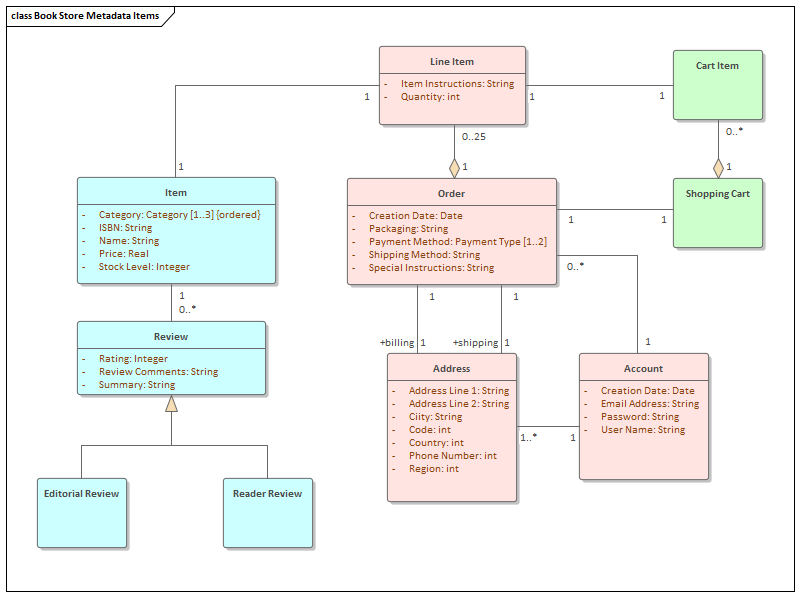

UML Data Modeling Concepts
For the desired exercise, UML logical data modeling has been used for the request about modeling transportation system database.
Spatial Databases
MORE
Covid-19 Dashboard for Canada
In order to observe the spatio-temporal changes of covid-19 cases and so on for each province, the dashboard has been provided.
SDI Services Implementation
MORECabo Delgado Displaced People
The crisis Cabo Delgado province in Mozambiue is facing, roots in variety of factors. However it is important to realize...